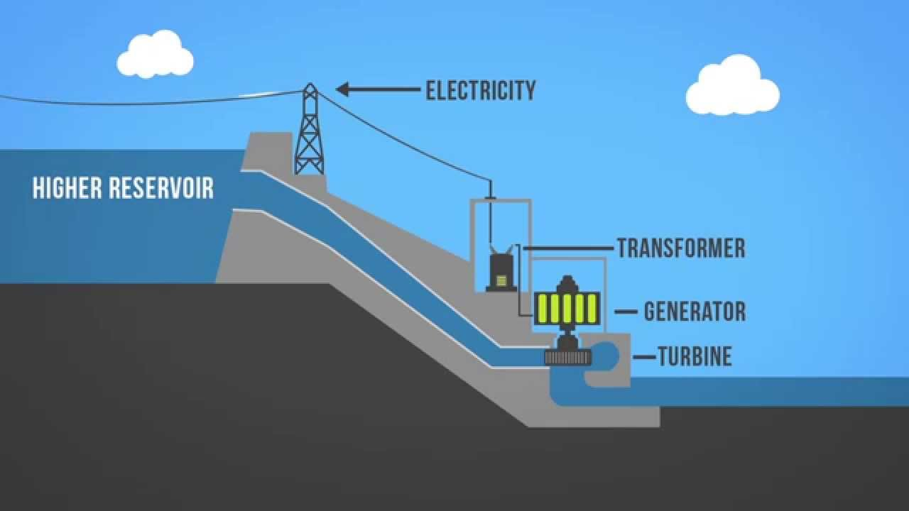
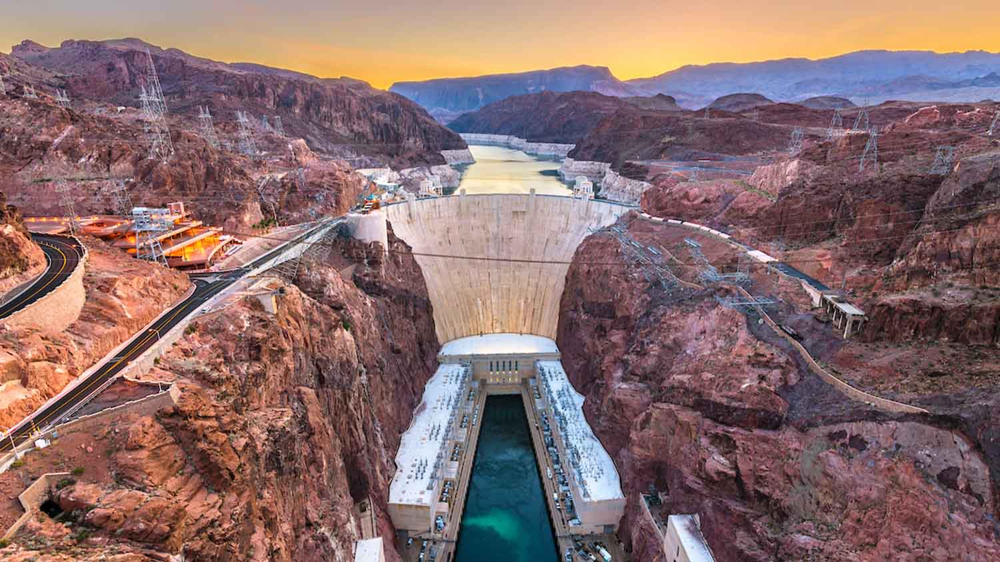
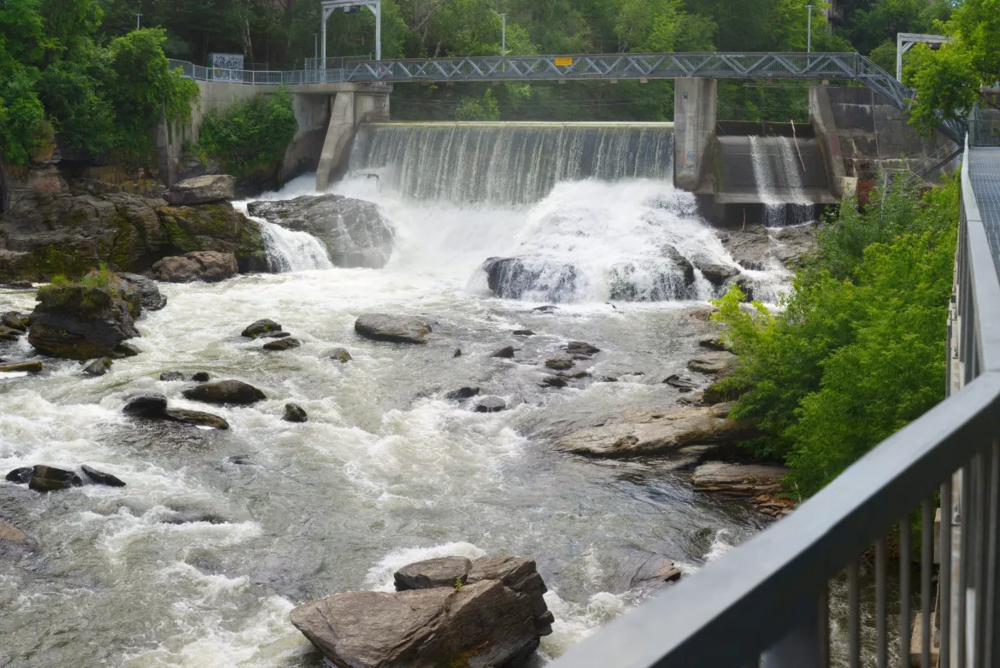
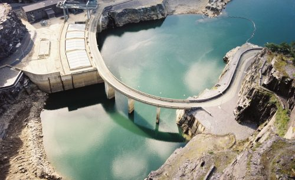
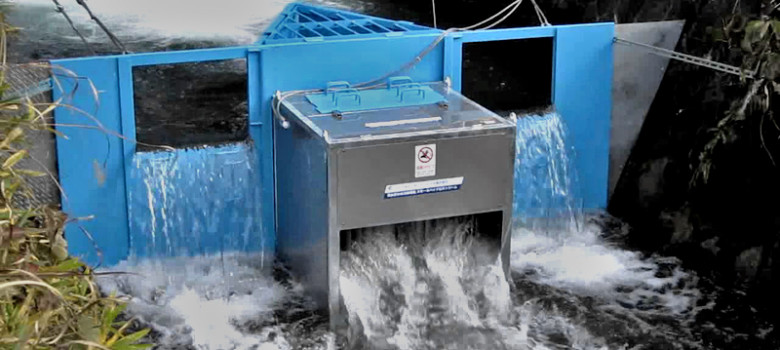
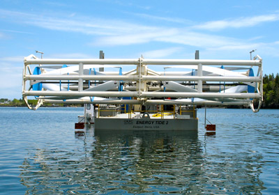
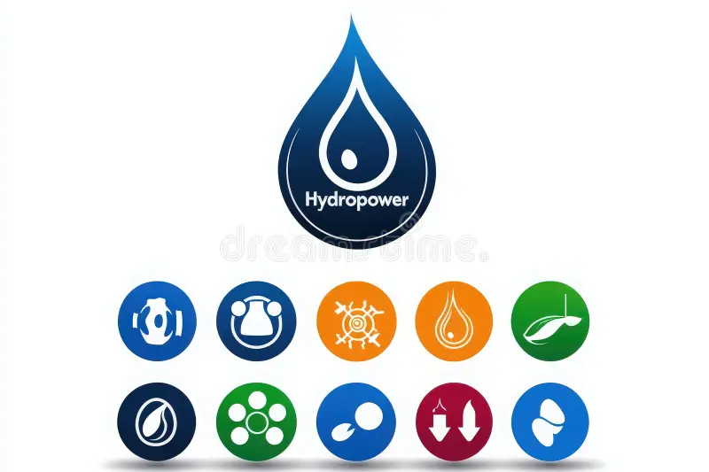
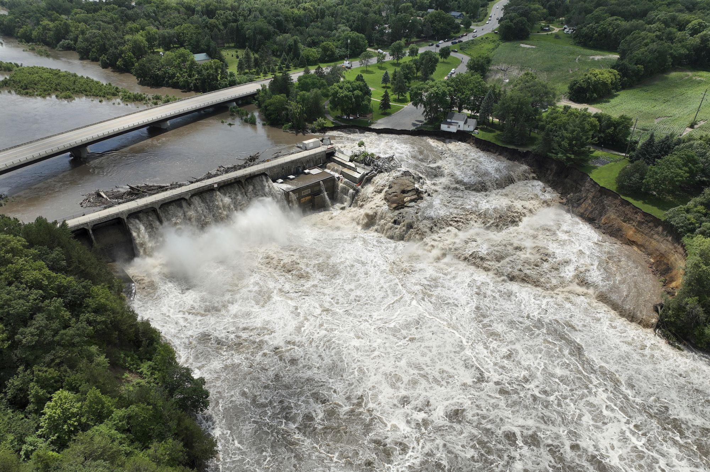

What is Hydropower?
Hydropower, also known as hydroelectric power, is a fascinating way to generate electricity. It uses the energy of flowing water to produce electricity, making it a renewable energy source. his energy system involves damming rivers or streams to create reservoirs, which store water. When released, the water flows through turbines, which then converts its kinetic energy into mechanical energy, which ultimately drives generators to produce electricity. The best part about hydropower is that it is a clean and reliable source of energy that emits minimal greenhouse gases compared to fossil fuels. It also provides flexibility in electricity generation, enabling storage of water for times of high demand. However, it is essential to be cautious as hydropower can have environmental impacts such as altering ecosystems and displacing communities. Therefore, careful planning and management are necessary to ensure that hydropower has a positive impact on sustainable development while reducing our reliance on fossil fuels.

How Hydropower Works?
The Process:
Energy efficiency works by improving the design and operation of devices,buildings and systems.
- Water Collection (Reservoir or River)
- A dam is usually built across a river to create a reservoir.
- The stored water behind the dam has potential energy due to its height.
- Water Release
- When water is released from the reservoir,it flows through penstocks(large pipes).
- As the water flows down due to gravity, its potential energy converts into kinetic energy.
- Turbine Rotation
- The fast-moving water strikes and spins a turbine, which is connected to a generator.
- The turbine’s rotation converts kinetic energy into mechanical energy.
- Electricity Generation
- The generator transforms the mechanical energy from the turbine into electrical energy.
- This electricity is then transmitted through power lines to homes and businesses.

Types of Hydropower Technologies
Hydropower technologies can be classified based on how and where the water is used to generate electricity.Here are the main types:
- Impoundment Hydropower (Dam-based)
- A dam stores a large volume of water in a reservoir. Water is released through turbines to generate electricity.
- Three Gorges Dam (China) & Hoover Dam (USA).
- Supplies base-load and peak-load electricity supply.
 - Run-of-River(RoR) Hydropower
- Uses the natural flow of a river with minimal or no reservoir. Water is diverted through a canal or penstock to turbines.
- RoR plants on mountain rivers.
- Ideal for small rivers; less environmental impact, but power output varies with river flow.
 - Pumped Storage Hydropower
- Acts like a battery. Water is pumped to a higher reservoir during low energy demand, then released to generate electricity during high demand.
- Dinorwig Power Station (UK).
- Energy storage and grid balancing.
 - Micro and Small Hydropower Systems
- Small-scale versions of the above types (typically below 10 MW).
- Used in rural or off-grid areas.
- Localized power generation for villages, farms, or single homes.
 - In-stream (Hydrokinetic) Systems
- Generates electricity directly from the flow of water without a dam. Turbines are placed in the river or tidal stream.
- River current turbines, tidal stream generators.
- Minimal infrastructure, but still under development for wide use.

Benefits of Hydropower
Hydropower is a renewable energy source because it uses the natural water cycle driven by the sun to generate electricity. Unlike fossil fuels,it doesn't deplete natural resources. As long as rivers flow and rainfall continues,hydropower can produce energy,making it a long-term and sustainable solution for meeting electricity needs.
One of the major benefits of hydropower is that it produces no direct air pollution or greenhouse gases during operation. It helps reduce carbon dioxide emissions and dependence on fossil fuels, contributing to the fight against climate change. This makes it an essential part of the transition to a cleaner and greener energy future.
Hydropower is one of the most reliable and efficient energy sources. It can respond quickly to electricity demand because water flow can be adjusted almost instantly. This makes it ideal for balancing the electricity grid,especially during peak demand times. Hydropower plants also have very high energy conversion efficiency—up to 90%, which is higher than most other sources.
Pumped-storage hydropower allows energy to be stored and used later, acting like a large natural battery. This helps stabilize the power grid by storing excess electricity when demand is low and releasing it when demand is high. It supports the integration of other renewable sources like solar and wind,which are more variable.
Hydropower projects create jobs during construction, operation, and maintenance. They often support local economies,improve infrastructure like roads and bridges,and provide water for irrigation,flood control and recreation. In remote areas,small hydropower plants can bring electricity where traditional grids cannot reach,improving quality of life.

Challanges
One of the major challenges of hydropower is its impact on ecosystems and biodiversity. Building large dams can flood forests,wetlands and wildlife habitats,leading to the loss of plant and animal species. It can also disturb the natural flow of rivers,affecting fish migration,water quality and sediment transport. These changes can severely impact downstream ecosystems.
Large hydropower projects often require the creation of reservoirs,which can submerge villages,farmland and culturally important sites. This leads to the displacement of people,forcing them to relocate. In many cases,affected communities face loss of livelihood,cultural disconnection and inadequate compensation or support.
While hydropower is cost-effective in the long term,it requires huge capital investment and time to build. The construction of dams,turbines and supporting infrastructure can take many years and involves complex engineering. The financial risks are especially high in regions with uncertain political or environmental conditions.
Hydropower production relies on consistent water flow, which can be affected by droughts, seasonal changes, or climate change. In times of low rainfall,power generation can drop significantly,making the system less reliable. Melting glaciers and shifting weather patterns due to global warming also threaten the future stability of water resources.
Though rare,dam failures can have catastrophic consequences. If a dam breaks due to poor construction,aging infrastructure or natural disasters like earthquakes,it can lead to massive floods,property damage and loss of life downstream. Maintaining dam safety is a serious and ongoing responsibility.

Go to Top ↑